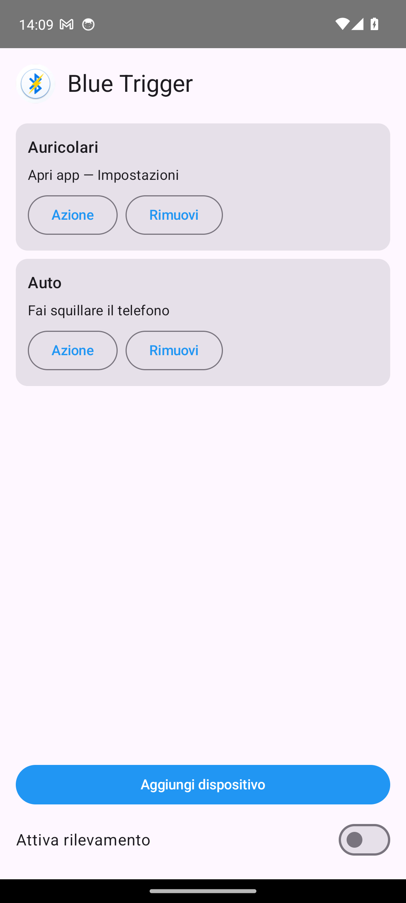
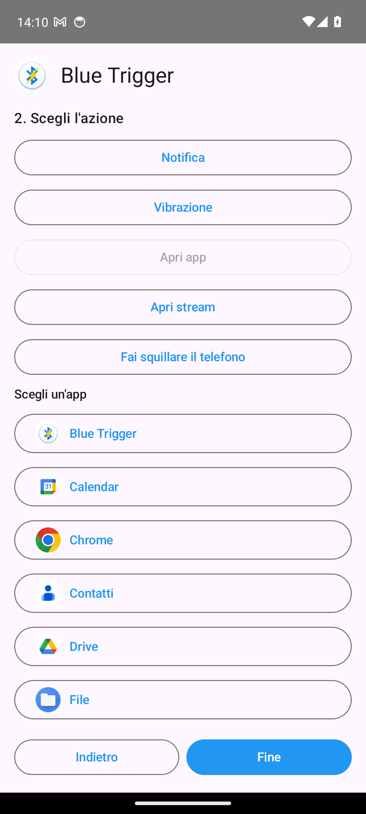

What it does
Blue Trigger watches for your trusted Bluetooth devices. When one of them connects — your headphones, your car, a speaker — it runs the action you chose for that device. Every device can have its own action, and you can change an action without re-selecting the device.
Actions
Open an app
Pick any installed app from a list showing each app's real icon.
Open a stream
Open a saved stream URL (name + link). Only http/https/rtsp/rtmp links are allowed.
Ring the phone
Play the ringtone at full volume and vibrate to locate the phone.
Notify
Post a notification when the trusted device connects.
Vibrate
A short vibration as a silent confirmation.
Per-device rules
Each bonded device gets its own action; add, change or remove them anytime.
Screenshots


Set it up
- Open Blue Trigger and grant the Bluetooth and notification permissions.
- Tap Add device and pick one of your paired Bluetooth devices, then confirm.
- Choose the action for that device (open app, open stream, ring, notify, vibrate) and tap Done.
- Repeat for other devices if you like — each keeps its own action.
- Turn on Enable detection. Now, when that device connects, its action runs.
Good to know
- A device must be paired (bonded) in Android Bluetooth settings first; Blue Trigger only acts on bonded devices.
- For Open app / Open stream, Android does not let an app open another app by itself from the background: Blue Trigger shows a notification that opens it. To auto-open on Android 14+, grant full-screen notification access from the in-app banner.
- Ring, Notify and Vibrate run immediately, no tap needed.
- Local-first: no accounts, no ads, no tracking. Device identifiers are not logged or sent anywhere.